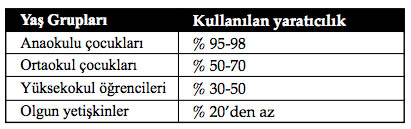

Önsöz
Büyük insanları diğerlerinden ayıran özellikler nelerdir, hiç düşündünüz mü?
Tarihe yön veren, yaşadıkları dönemde hayatın akışının değişmesinde rol oynayan, yaşama gözlerini yumduktan sonra da arkalarında bıraktıkları eserler nedeniyle minnetle ve saygıyla anılan bu insanların ortak özellikleri var mıdır acaba?
Olaylar ve davranışlar karşısında verdikleri hazırcevaplardan yola çıkarak ayrı ayrı hayat öykülerini incelediğimiz bu insanların öne çıkan bazı özelliklerinin olduğu görülüyor:
 Kendine güvenen
Kendine güvenen
 Güçlü mizah yeteneği olan
Güçlü mizah yeteneği olan
 Karşısındakini ikna edebilme kabiliyetine sahip
Karşısındakini ikna edebilme kabiliyetine sahip
 Kendine ait ilkeleri olan
Kendine ait ilkeleri olan
Olayları olduğundan farklı görebilen
 Büyük düşünebilen
Büyük düşünebilen
 Zorluklara katlanabilen
Zorluklara katlanabilen
 Başlanılan işi sonuna kadar sürdüren
Başlanılan işi sonuna kadar sürdüren
Duygusal yönü zengin
 Hızlı düşünen ve çabuk karar veren insanlar.
Hızlı düşünen ve çabuk karar veren insanlar.
Ve daha nice özellikleriyle tarih kitaplarında adlarından bahsettiren bu büyük insanların yaşamlarının ilk yıllarının diğer insanlardan farklı olmadığı görülüyor. Hatta bazı ünlü şahsiyetler vasatın da altında başlamışlar hayata.
Fakat yıllar ilerledikçe bu kişiler içinde bulundukları koşulları beğenmeyerek veya kendilerine önemli hedefler belirleyerek değişiklik ve ilerleme yoluna gitmişler.
Yaşamın onlara sunulandan daha fazlası olduğunu görebilen ve hedefleri için çaba gösteren bu ünlü kişiler başarının ilk adımını böylece atmış oluyorlardı.
Bu uzun yolculukta hataya düşme gibi bir durum söz konusu olduğunda gerekli dersleri almışlar ve değişme es-nekliğiyle daha da güçlenerek yollarına devam etme yeteneğini göstermişler.
Tarihe herkes geçebilir mi?
Birleşmiş Milletler tarafından yayınlanan tahminlere göre dünya nüfusunun 2011 yılında 7 milyarı geçmesi bekleniyor. Bu rakam sadece yaşayanlarla sınırlı. Bugüne dek dünya sahnesinden gelip geçenleri düşündüğümüzde rakam fazlasıyla kabarıyor.
Bu kadar insan içerisinden sıyrılıp, farklılığını ortaya koyarak yaptığı işlerle tarih kitaplarına girenlerin sayısının azlığı dikkat çekmektedir. Uzmanlar bunu, insanların çocukluk yıllarında beyninin her iki yarısını da çok iyi kullanabilirken, ilerleyen yaşlarda beynin sol tarafının bir şekilde (bunda verilen eğitimin de rolü büyük) diğerine baskın hâle gelmiş olmasına bağlıyor.
Yani mantık, sözcükler, sayılar, analiz gibi entelektüel, akademik ve mesleki faaliyetlerden oluşan beynin sol kısmı; ritim, renk, hayal kurma, bütünü görme, üç boyutlu düşünebilme gibi sanatsal, yaratıcı ve duygusal faaliyetlerden oluşan beynin sağ tarafından üstün hâle geliyor.
Tarihe geçmeyi başarmış bu büyük kişilerin beyinlerinin her iki tarafının özelliklerini çok iyi kullanarak diğer insanlardan ayrıldıkları, araştırmalar sonucu tespit edilmiştir.
Örneğin Einstein, matematiksel hesaplamalar ve analizlerle güçlü beyninin sol kısmını, hayal dünyasında güneş ışınlarından birine binerek uzayda yaptığı yolculukla kıvrımlı ve sonlu bir evren görüşünü edindiği beyninin sağ kısmıyla birleştirerek bilime önemli katkılar sağladı. Yani mantığını resmin tamamını görebilme yeteneğiyle birleştirdi.
Mesela Fatih Sultan Mehmet, İstanbul’un alınması için yaptığı tüm hesaplamalarla birlikte karşısına çıkan zorlukta gemilerini karadan yürüterek engin hayal gücünü kullanmış ve başarıya ulaşmıştır. Beynin her iki tarafının işbirliği içinde olması düşüncenin önemli bir güce dönüşmesini sağlıyor.
ABD’nin Utah Eyaleti’nde yapılan bir araştırma insanın yaşı ilerledikçe beyninin sağ tarafını kullanmadaki azalmayı açıkça gösteriyor:

Yaratıcı Zekânın Gücü, Tony Buzan, Epsilon Yayınevi
İşte bu çalışmanın amacı; kendilerini ve dünyayı değiştirme azim ve cesaretine sahip olan, tarihe önemli katkıları olmuş kişilerin zekâlarını yansıtan hazırcevaplarıyla, beyinlerindeki işbirliğini en iyi anlatan yaşam öykülerine bir göz atmaktır.
Eğer sizin de başarmak isteğiniz hedefleriniz varsa ve beyninizin mantık ağırlıklı sol tarafı etkin rol oynayıp bastırıyor, hayal gücü ağırlıklı sağ yanınızı açığa çıkarmakta zorlanıyorsanız, bunu en iyi yapanları izlemelisiniz: Çocukları...
Akın Alıcı